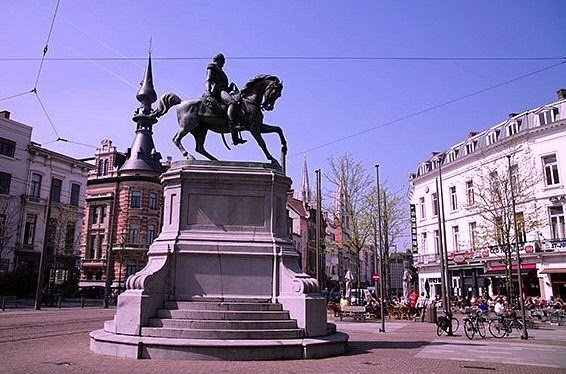
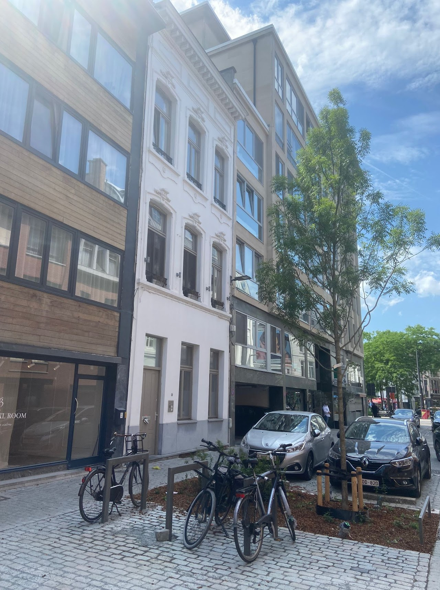
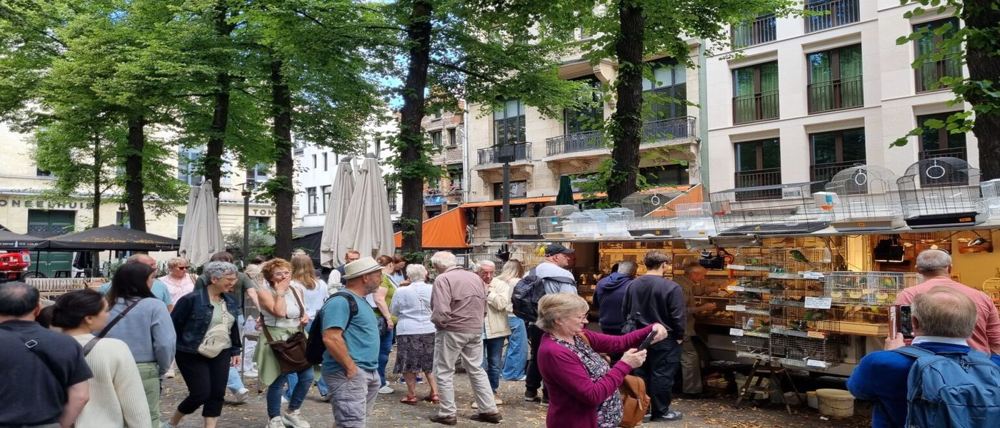

Locatie
Midden in de 16de-eeuwse binnenstad van Antwerpen.

Bruisende buurt
De studentenkamers liggen vlakbij de bruisende Leopoldplaats en de Oudevaartplaats — "de vogeltjesmarkt". De Stadsschouwburg is om de hoek en de winkelzone Meir bereik je na een paar minuutjes stappen.
In de onmiddellijke omgeving vind je verschillende hogescholen en universiteitsgebouwen. Openbaar vervoer bevindt zich om de hoek, aan halte Antwerpen Nationale Bank.
Bekijk de kamers
Woonerf
Een extra troef is de vernieuwde inrichting van de straat als woonerf. Hier zijn de wandelaar en de fietser baas — rustig wonen, midden in de stad.

De vogeltjesmarkt op de Oudevaartplaats — om de hoek